Taxonomy · Systematics · Classification
How scientists sort every living thing
From bacteria too small to see to blue whales, every known organism has a place in one shared filing system. Learn the three domains, the six kingdoms, the Linnaean ranks that connect them, how a species gets its two-part scientific name, and how to use evidence — not guesses — to classify an unknown organism.
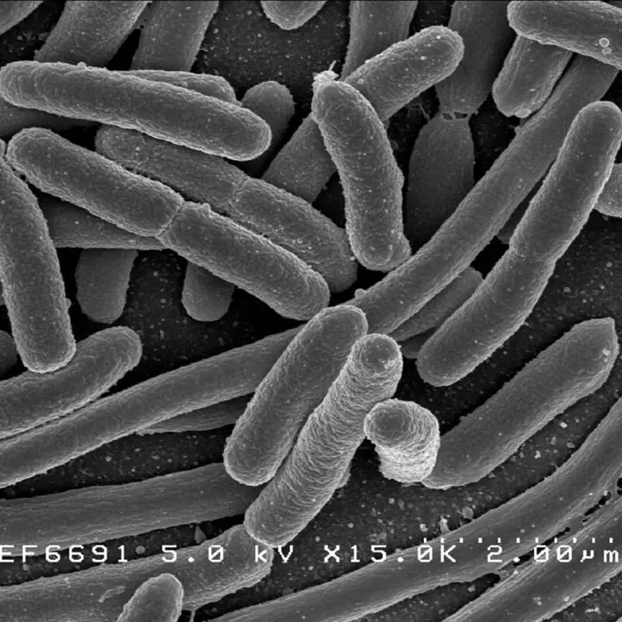
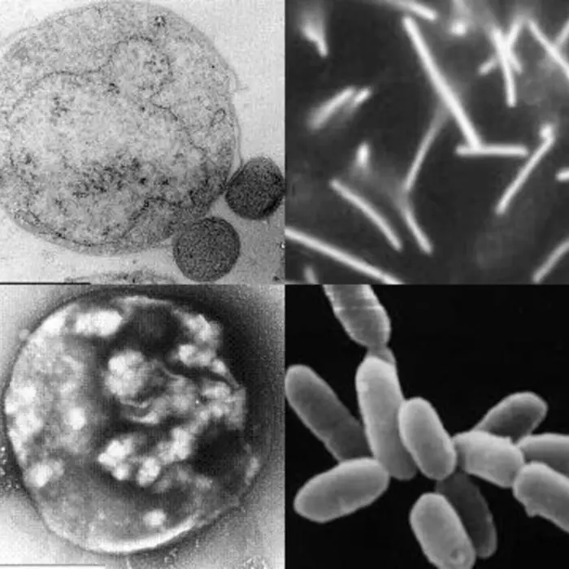
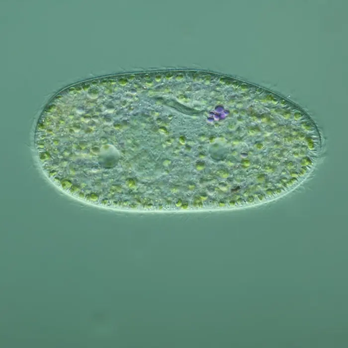
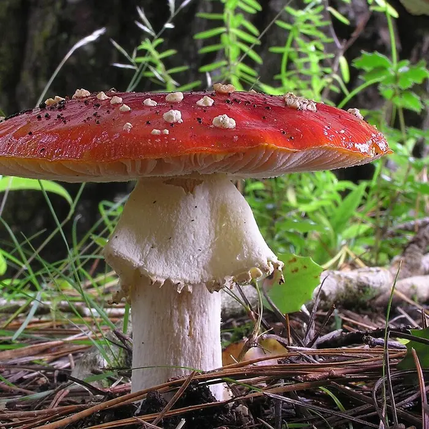
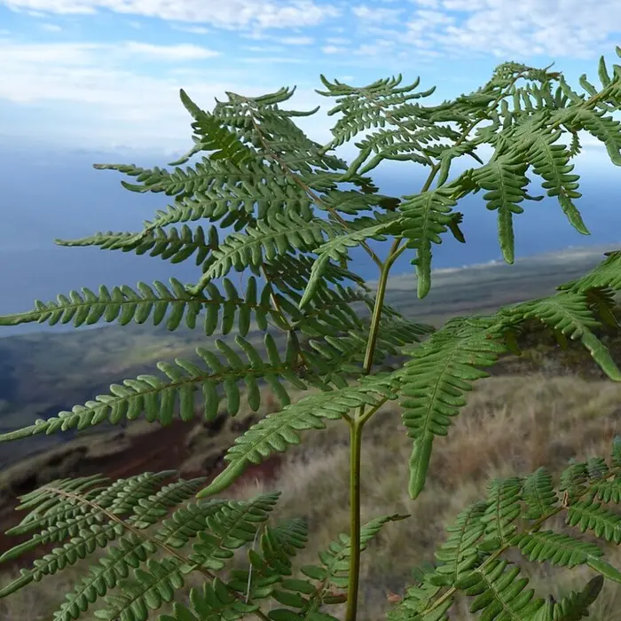
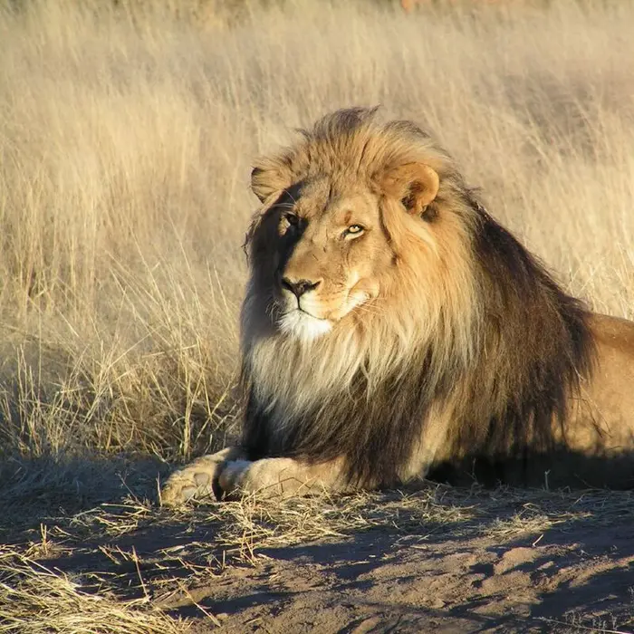
Start with the problem classification solves
Why bother sorting life at all?
Named species
Roughly 2.1 million species have been formally described — with millions more thought to exist.
Shared language
A scientific name means the same organism to every researcher, in every country, in every language.
Predictive power
Knowing an organism's classification lets scientists predict traits they haven't even observed yet.
Before the six kingdoms, there were guesses
A Brief History of Classifying Life
Today's system took over two thousand years to build. Each generation inherited the last one's mistakes — and fixed them with better tools.
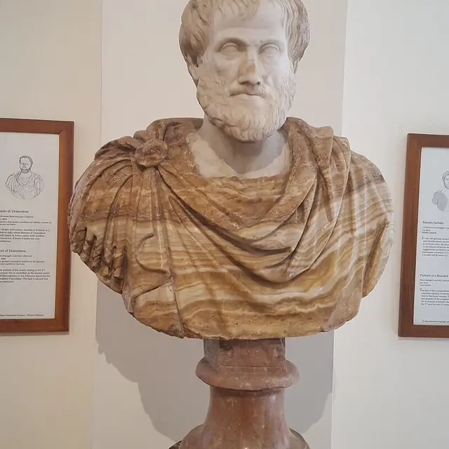
Aristotle's Ladder of Nature
Aristotle sorted roughly 500 animals by traits like blood, legs, and habitat, and split all living things into two groups — plants and animals. His "Scala Naturae" ranked life from simple to complex, with humans at the top. It was flawed, but it was the first attempt to classify life by evidence rather than myth, and it stood for nearly 2,000 years.
Leeuwenhoek finds a hidden kingdom
A Dutch cloth merchant with no scientific training ground his own glass lenses into microscopes sharp enough to see what no one had ever seen: single-celled "animalcules" swimming in pond water and his own dental plaque. He had just discovered bacteria and protists — two entire kingdoms Aristotle never knew existed.
Linnaeus builds the hierarchy
Carl Linnaeus published Systema Naturae, a nested system of ranks — kingdom down to species — that could organize any organism on Earth. It is the direct ancestor of the Domain-through-Species ladder taught later in this lesson.
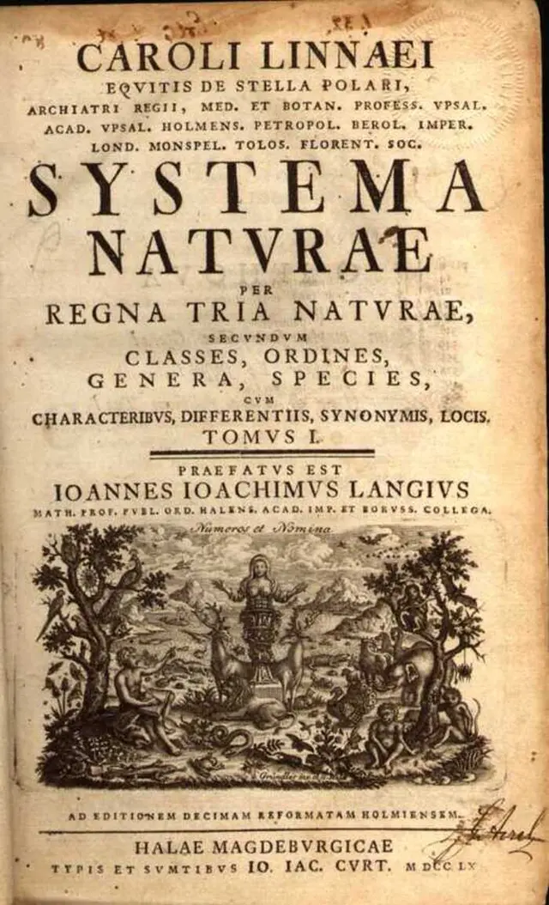
The edition that stuck: binomial names
By the 10th edition, Linnaeus had switched every species to a short, two-part Latin name — Genus species — replacing clunky multi-word descriptions. Taxonomists still use 1758 as the official starting point for every validly named animal species alive today.
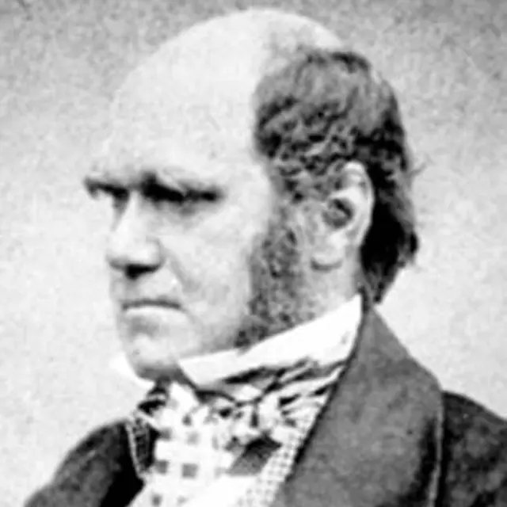
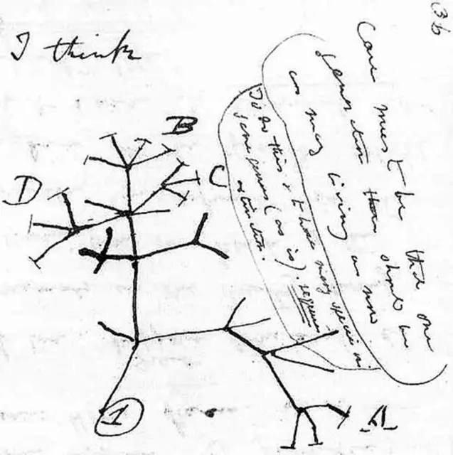
Darwin turns the ladder into a tree
In a private notebook in 1837, Darwin sketched a rough branching diagram over the words "I think" — the first hint of an idea he wouldn't publish for 22 more years. On the Origin of Species (1859) argued that classification should track ancestry, not just appearance — turning Linnaeus's tidy ranks into a genealogy. That idea still drives the cladograms further down this page.
The broadest split of all
Three Domains of Life
Above kingdom sits an even bigger category. Domains split life by cell structure — whether a cell has a nucleus, and how ancient its cellular machinery is.
Single-celled, no nucleus. Found in soil, water, and living inside you right now. Includes decomposers and pathogens alongside many harmless species.
Single-celled, no nucleus, but genetically distinct from bacteria. Many thrive in extreme environments: boiling springs, salt flats, and deep-sea vents.
Cells with a true nucleus and internal organelles. This single domain contains four of the six kingdoms — protists, fungi, plants, and animals.
Prokaryotic cell
Eukaryotic cell
Inside Domain Eukarya (plus the two prokaryote kingdoms)
The Six Kingdoms Explorer
Every organism you've ever met belongs to one of six kingdoms. Select one to compare its cell type, how it gets energy, and real examples.
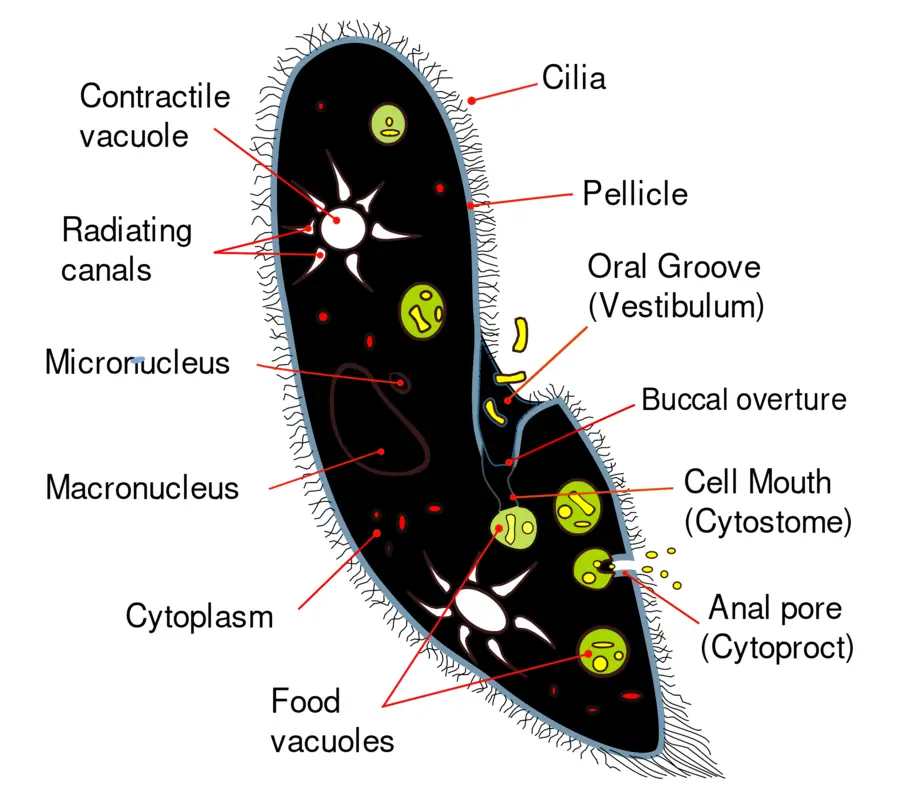
Fig. 7 · Paramecium anatomy, labeled
Reading a labeled specimen diagram
Real textbooks pair a photo with a labeled line diagram, because a photo alone can hide small structures. This Paramecium — a Protista — shows cilia for movement, an oral groove leading to a cell mouth, food vacuoles for digestion, and two contractile vacuoles with radiating canals that pump out excess water.
Notice it has two nuclei — a large macronucleus that runs daily cell functions and a small micronucleus used only in reproduction. No single external photo could show that; it takes a labeled diagram.
From broadest to most specific
The Linnaean Hierarchy
Every kingdom subdivides into smaller and smaller groups. Each step down means "more specific, fewer members, more shared traits."
Eukarya
3 totalAnimalia
6 totalChordata
~35 (animals)Mammalia
hundredsCarnivora
thousandsFelidae
tens of thousandsPanthera
~2M speciesPanthera leo — the lion
one organism kindThe last two ranks form a species' scientific name
Binomial Nomenclature
Carl Linnaeus standardized a two-part naming system in the 1750s. Every species gets a Genus + species name, always written in Latin form.
The genus is capitalized; the species epithet is lowercase.
Both words are italicized (or underlined by hand): Panthera leo, not Panthera leo.
Once used in a passage, the genus can be abbreviated: P. leo.
The species name alone means nothing — leo only makes sense paired with its genus.
Classification keeps changing
From Linnaeus to DNA: modern cladistics
Then: shared appearance
Linnaeus grouped organisms mainly by visible similarities — number of legs, flower shape, tooth type. Useful, but sometimes misleading: two species can look alike from evolving in similar environments (convergent evolution) without being closely related.
Now: shared ancestry
Modern taxonomy builds cladograms — branching family trees — from DNA and shared derived traits, grouping organisms by how recently they shared a common ancestor. This is why birds are now classified as living dinosaurs, and why whales sit inside the same order as hippos.
Birds share a more recent common ancestor with extinct dinosaurs than either group shares with crocodilians — so cladistically, birds are dinosaurs.
DNA evidence shows hippos are the closest living relatives of whales — closer than hippos are to cattle or deer, despite how different they look.
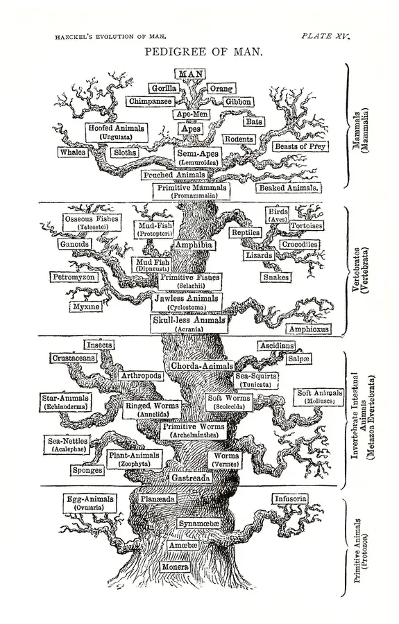
Fig. 8 · Haeckel's "Pedigree of Man," 1879
A 19th-century first draft
Ernst Haeckel drew trees like this one by hand in 1879 — decades before DNA was discovered — using anatomy and embryology as his only evidence. The overall shape, a single branching trunk connecting all life, was remarkably close to correct.
But look closely: Haeckel placed himself at the very top, as if evolution were climbing toward humans on purpose. Modern cladograms fix that bias — they have no "top." Every living tip on the tree, from bacteria to humans, is equally the product of the same amount of evolutionary time.
Interactive investigation · Spans every kingdom
Mystery Organism Identification Lab
Select a specimen, inspect the evidence, and classify it by kingdom. Scientists identify organisms from observable traits — not from guesses about their names.
Mystery specimen A
Tip: start with cell type — does it have a nucleus?
Go deeper on one kingdom
Animal Kingdom Deep-Dive
Ready to zoom in? Kingdom Animalia alone splits into dozens of phyla. These two tools focus entirely on animal classification, from sorting basic body plans to comparing phylum anatomy side-by-side.
Why this is STEAM
Sorting life, five ways of thinking
Compare cell structure, anatomy, and evolutionary evidence.
DNA sequencing and databases reshape classification constantly.
Dichotomous keys are decision-tree algorithms built by hand.
Scientific illustration turns traits into precise, labeled diagrams.
Cladograms and branching trees model relationships and probability.